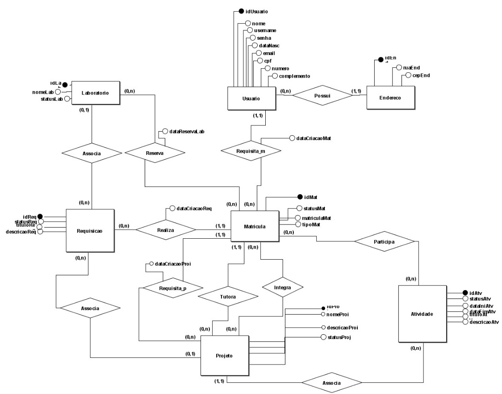

O SyncLab é um projeto que visa desenvolver um software voltado para gestão de laboratórios de pesquisa e desenvolvimento de quaisquer instituições. Laboratórios são lugares que geralmente possuem materiais valiosos, sejam eles de pesquisa ou os próprios aparelhos. Portanto, um monitoramento rígido desses lugares, saber quem entra e quem sai, quais pessoas têm acesso a chave, e também quem pode ter acesso ao sistema e se conectar a rede caso seja um laboratório de informática é importante. O propósito do SyncLab é justamente auxiliar nesse monitoramento.
Para proporcionar um melhor entendimento das funcionalidades do Synclab, uma breve esplicação do estruturamento desse sistema é necessário.
Começando pelo modelo de processo do sistema, temos como usuário inicial do sistema o Administrador que terá como ações Registrar um Docente, Discente ou outro Administrador no sistema, Criar Projetos que serão posteriormente delegados aos devidos orientadores, Gerenciar Requisições podendo visualizar o conteúdo e mudar os status, Gerenciar Laboratórios podendo acessar informações gerais dos laboratórios e, por fim, Acessar Informações dos Projetos que será um dashboard (painel de controle) administrativo apresentando os dados gerados pelo SyncLab de forma agregada.
Já com os Docentes registrados no sistema, terão como ações Registrar Requisições, Gerenciar os Projetos e Atividades, bem como Registrar os Discentes nos projetos que administra.
Ao registrar os Discentes no sistema, eles poderão executar a ação Contabilizar Horas em algum projeto.
Além disso, foi desenvolvido o esquema do Banco de Dados do Synclab:
Esses foram os principais guias no sesenvolvimento do front-end do sistema SyncLab.